1.2. What is constraint programming?
Constraint Programming (CP) is an emergent field in operations research[1]. It is based on feasibility (i.e. finding a feasible solution) rather than optimization (i.e. finding an optimal solution) and focuses on the constraints and variables’ domain rather than the objective function.
| [1] | This new field has its origins in a number of fields including Artificial intelligence, Programming Languages, Symbolic Computing, Computational Logic, etc. The first articles related to CP are generally dated from the seventies but CP really started in the eighties. As with every new field, names, origins, etc. are not settled and different people sometimes take different avenues. We carefully tried to use commonly accepted names, techniques, etc. |
Although quite new, it already possesses a strong theoretical foundation, a widespread and very active community around the world with dedicated scientific journals and conferences and an arsenal of different solving techniques.
CP has been successfully applied in planning and scheduling and in numerous other problems with heterogeneous constraints (see section Real examples for a description of some of its achievements).
The problems CP deals (mostly) with are called Constraint Satisfaction Problems (CSP). Roughly, a CSP is a mathematical model with constraints and the goal is to find a feasible solution i.e. to assign values to the variables of the model such that every constraint is satisfied. One of the most well-known such problem is the Boolean SATisfiability Problem (boolean SAT). (See Wikipedia Constraint satisfaction problem and Boolean satisfiability problem entries.)
Warning
This section was written with different readers in mind. The ones described in the preface but also our colleagues from operations research that are new to CP. From time to time, we compare CP with their field and we use some jargon. Don’t be afraid if you don’t understand those asides and just read on.
Constraint Programming does optimization too!
When faced with an optimization problem, CP first finds a feasible solution with an objective value of 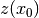. It then adds the constraint 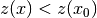 and tries to find a feasible solution for this enhanced model.
The same trick is applied again and again until the addition of constraint 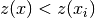 for a feasible solution 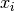 renders the model incoherent, i.e. there is no feasible solution for this model. The last feasible solution is thus an optimal solution.
1.2.1. Strength of Constraint Programming
Two of the main assets of CP are:
- the ease to model a problem and
- the possibility to add heterogeneous constraints.
1.2.1.1. The ease to model a problem
If you are used to (non-)linear programming, you know how difficult it is to model some constraints (forcing them to be linear, use of big for disjunctions, replacing one constraints by a bunch of linear constraints, relying on the direction of optimization (minimizing or maximizing), etc.). None of this happens in CP because constraints can be any constraints. They even don’t have to be numerical and can deal with symbolic variables! This allows to model your problems in a very natural fashion.
One of the most well-known global contraints is the constraint. This constraint ensures that the variables have different values in a feasible solution. For instance 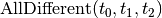 forces the three variables , 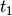 and 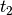 to have different values. Say that , and can take the integer values in 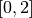.
Compare
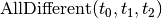
to the classical way (see [Williams2001]) of translating this constraint in linear integer programming for instance:
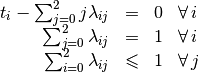
To model the 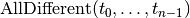 constraint[2] with 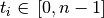, we already need 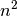 auxiliary variables 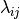:
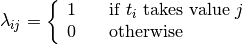
and 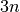 linear equations!
| [Williams2001] | Williams, H.P. and Yan, H. Representations of the all_different Predicate of Constraint Satisfaction in Integer Programming, INFORMS Journal on Computing, V.3, n. 2, pp 96-103, 2001. |
| [2] | In some special cases, we are able to model the constraint in a more efficient manner. |
Of course if was being replaced by its linear integer programming translation for instance, it would only be syntactic sugar but it is not. Specialized and efficient propagation algorithms were (and are still!) developed to ensure , and keep different values during the search.
Numerous specialized and general global constraints exist. The Global Constraint Catalog references 354 global constraints at the time of writing.
Because CP deals locally[3] with each constraints, adding constraints, even on the fly (i.e. during the search), is not a problem. This makes CP a perfect framework to prototype and test ideas: you can change the model without changing (too much) your search strategy/algorithm.
| [3] | Propagation is done globally on all involved variables but the propagation is done constraint by constraint. |
1.2.1.2. The possibility to add heterogeneous constraints
Because the type of relationships among variables that can be modelled in CP is quite large[4], you can play with quite heterogeneous constraints and mix all type of variables.
| [4] | Basically, you only need to be able to propagate (hopefully efficiently) your constraints. |
One of the curiosities of CP is its ability to deal with meta-constraints: constraints on constraints!
Take for instance the constraint. Let 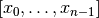 be an array of integers variables with domain 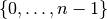, 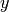 an integer variables with domain contained in and with domain . The constraint assign the 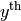 variable in to , i.e.:
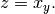
If you change or the array , will change accordingly but remember that you have an equality, so this works the other way around too. If you change then or/and the array will have to change!
This technique is called reification and you can learn more about it in the chapter Reification.
The ease to model a problem and the possibility to add heterogeneous constraints sometimes make CP the preferred or only framework to model some difficult problems with a lot of side-constraints.
1.2.2. The search
Propagation is not enough to find a feasible solution most of the time. The solver needs to test partial or complete assignments of the variables. The basic search algorithm (and the one implemented in or-tools) is a systematic search algorithm: it systematically generates all possible assignments one by one[7], trying to extend a partial solution toward a complete solution. If it finds an impossibility along the way, it backtracks and reconsiders the last assignment (or last assignments) as we have seen in the previous section.
There exist numerous refinements (some implemented in or-tools too) to this basic version.
The assignment possibilities define the search space[8]. In our 4-queens example, the search space is defined by all possible assignments for the 16 variables 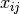. For each of them, we have 2 possibilities: or . Thus in total, we have 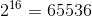 possibilities. This is the size of the search space. It’s important to understand that the search space is defined by the variables and their domain (i.e. the model) and not by the problem itself[5]. Actually, it is also defined by the constraints you added to the model because those constraints reduce the possibilities and thus the search space[6].
The search algorithm visits systematically the whole search space. The art of optimization is to model a problem such that the search space is not too big and such that the search algorithm visits only interesting portions of the search space quickly[9].
| [5] | In section Model, we will see a model with a search space of size 16 for the 4-queens problem. |
| [6] | Determining the exact (or even approximate) search space size is very often a (very) difficult problem by itself. |
| [7] | See the section Basic working of the solver: the search algorithm for more details. |
| [8] | See next section for more. |
| [9] | Most of the time, we want good solutions quite rapidly. It might be more interesting to have a huge search space but that we can easily visit than a smaller search space that is more difficult to scan. See the section It’s always a matter of tradeoffs. |
When the solver has done its propagation and has not found a solution, it has to assign a value to a variable[10]. Say variable 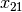. Because we don’t want to miss any portion of the search space, we want to visit solutions where 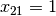 but also solutions where 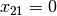. This choice is called branching. Most systematic search algorithms are called branch-and-something:
- branch and bound;
- branch and prune;
- branch and cut;
- branch and price;
- ...
In Constraint Programming, we use Branch and prune where pruning is another term for propagation. You can also combine different techniques. For instance branch, price and cut.
| [10] | Or a bunch of variables. Or it can just restrict the values some variables can take. Or a combination of both but let’s keep it simple for the moment: the solver assigns a value to one variable at a time. |
CP for the MIP practitioners[11]
There are strong similarities between the two basic search algorithms used to solve an MIP and a CSP.
MIP CSP Branch and bound Branch and prune Bound: Prune:
- Relax constraints
- Propagate constraints
- Reduce gap
- Reduce variable domains
Goal: Optimality Goal: Feasibility View: Objective oriented View: Domain oriented
| [11] | This is an aside for our MIP (Mix Integer Programming) colleagues. It’s full of jargon on purpose. |
Google or-tools |
User's Manual
Google search
Welcome
Tutorial examples
Current chapter
1. Introduction to constraint programming